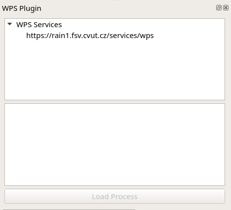
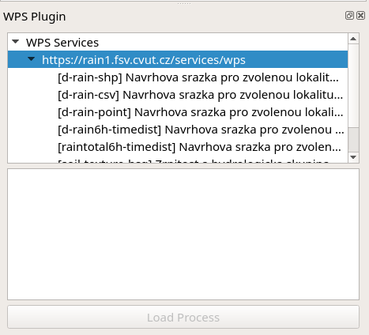
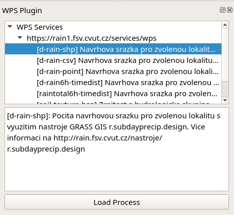
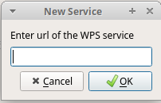
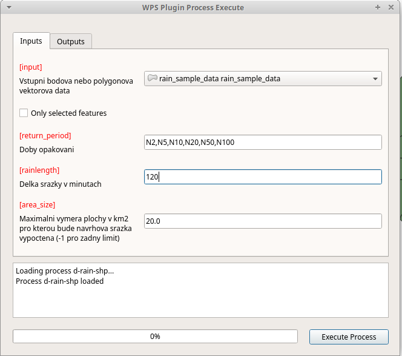
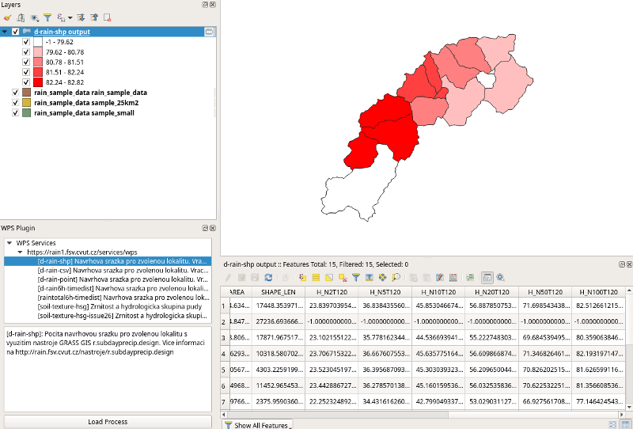

QGIS Web Processing Service Client¶
This plugin provides a basic implementation of OGC Web Processing Service (WPS) client for QGIS Desktop environment. It is based on OWSLib and allows to run all three requests on WPS:
GetCapabilities
DescribeProcess
Execute
Introduction¶
Plugin is accessible from Plugins Toolbar:
Plugin is implemented as dockable widget for listing WPS services and processes and a standalone dialog for executing a WPS process.
Usage¶
The plugin allows to add new services, list processes for the selected service and open dialog to run the process.
To list processes just click by left mouse button on service from the list.
To show process description just click on the process by left button of the mouse.
To run process you can use three possible ways:
Click on button
Load ProcessDouble click by left mouse button on process in the list
Right mouse button click on process in the list and
Executebutton from contextual menu
To add service use right mouse button click on WPS Services:
Then you enter URL of the service in dialog:
Execute WPS process¶
Process execution is done on the dialog where you can specify Inputs and Outputs. The inputs are usually some data layers and parameters. The outputs is usually some data layer or table.
The output should be automatically loaded into map or if the result needs some postprocessing it may be postprocessed by a script stored in the data structure of the plugin. There are two sample postprocessing scripts already distributed with the plugin.
If the results can not be loaded into map its content is shown in the log text area of the dialog.
WPS process presented on image above calculates amount of rain to produce 2 to 100 year flood. The inputs are water basins in a form of polygon layer, list of floods periods and length of the rain in minutes.
The output is layer where for each polygon the amount of rain is calculated.
Following images show how the process is executed. The process
execution is done by Execute Process button. Then the user can see
progress in progress bar and log text area.
When the process is finished a new layer is loaded into map. You can see classified result on the following image with table where are results of the calculation for all selected periods.
Handling output¶
The output can be loaded into map or postprocessed. In a case when
there is postprocessing script as a part of plugin the dialog allows
to select Postprocessing option on Output tab of the dialog.
Postprocessing scripts are stored in postprocessing directory of
the plugin. For each service has to be created directory that is
named according to URL of the service.
The naming convention is as follow:
URL: https://rain1.fsv.cvut.cz/services/wps
Directory name: rain1_fsv_cvut_cz_services_wps
So dots and slashes are changed into underscore character and
https:// is removed.
The script is then named according to the identifier of the process.
Following script loads result in a form of CSV and joins it with input layer.
import os
from qgis.utils import iface
from qgis.core import QgsVectorLayer, QgsProject
from qgis.gui import QgsMapLayerComboBox, QgsFieldComboBox
import processing
class wps_postprocessing:
def postprocess(self, inputs, response):
process_identifier = os.path.splitext(os.path.basename(__file__))[0]
try:
csv_uri = 'file:///' + response.output['output'].filepath + '?delimiter=,'
csv = QgsVectorLayer(csv_uri, "{} output".format(process_identifier), 'delimitedtext')
QgsProject.instance().addMapLayer(csv)
layer = None
layerField = None
csvField = None
for param, widget in inputs.items():
if isinstance(widget, QgsMapLayerComboBox):
layer = widget.currentLayer()
elif isinstance(widget, QgsFieldComboBox):
layerField = widget.currentField()
csvField = csv.fields()[0].name()
if layer is not None and layerField is not None and csv is not None and csvField is not None:
parameters = { 'DISCARD_NONMATCHING' : False, 'FIELD' : layerField, 'FIELDS_TO_COPY' : [], 'FIELD_2' : csvField, 'INPUT' : layer.source(), 'INPUT_2' : csv.source(), 'METHOD' : 1, 'OUTPUT' : 'TEMPORARY_OUTPUT', 'PREFIX' : '' }
processing.runAndLoadResults('qgis:joinattributestable', parameters)
except Exception as e:
print(e)
return None
return 0
Funding¶
This work is co-financed under Grant Agreement Connecting Europe Facility (CEF) Telecom project 2018-EU-IA-0095 by the European Union.